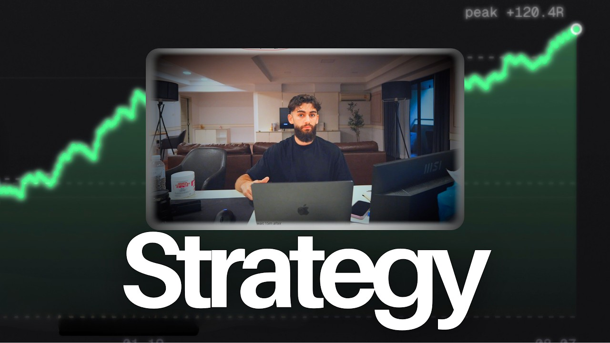
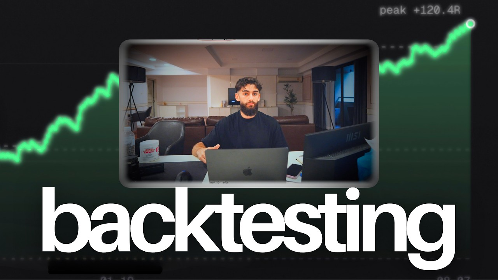
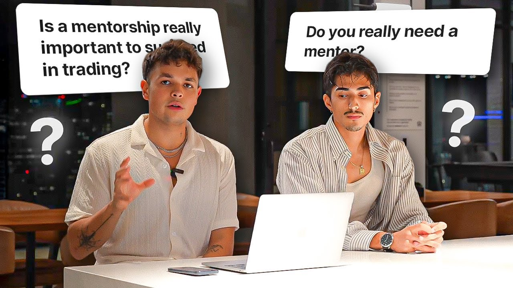

1.2K views
1.2K views
Road to $2,000,000 in Funding | Week 1
Marker on a whiteboard, certificates with your legal name on them.
Built from your channel, your two pages and three of your videos
Built for Matthew Bergin.
Marker on a whiteboard, certificates with your legal name on them.
01 / THE FINDING
It's a screen recording with the macOS menu bar still in it and a subtitle burnt across the bottom. 1.8K views, your channel record. The two you designed most carefully this month did 62 and 181.
That isn't a lesson about design. Look at what was in the frames that worked. Week 1 of Road to $2M had a whiteboard with ROAD TO 2 MIL in marker and real Alpha Capital certificates with Matthew Simon Bergin printed on them. Week 7 had five payout certs and $14,000 PAID OUT. The Leon video had a Miro board full of his payout screenshots.
Every frame carrying a document you could read did between
500 and 1.2KEvery frame carrying a designed graphic and a single word did between
62 and 373The polish went up, the proof went out, and the views followed the proof.
02 / YOUR CHANNEL, SIDE BY SIDE
The polish went up, the proof went out, and the views followed the proof.
1.2K views
Marker on a whiteboard, certificates with your legal name on them.
 1.1K views
1.1K views
A raw screen grab of a Miro board. You didn't design it and it outperformed.

181 views same peak +120.4ROne word, one stat, no document.

62 views same peak +120.4RThe same file as the one above with the word swapped, same +120.4R in the corner.
THE RULE, PROVEN ON CLIENT WORK
 814
814
"TRADING IS THIS EASY" on a yellow bar, arrows labelling both men "6-FIGURE TRADER".

737Speech bubbles posing the viewer's own question back at them.
 314
314
A named blueprint diagram in frame, six labelled boxes.
Those uploads spiked, and the top two are still the channel's best a year later. Views settled back after that batch before climbing again. The channel was not permanently transformed.
THE PART THAT'S ACTUALLY COSTING YOU
thetradingclub.uk has seven student stories on it. TzFred made $20k from prop firms. JJ went from sparky to full time in 77 days. H1rvey went from Amazon driver to day trader in four months. An 18 year old moved to Thailand to trade with you. Plus 58 five star reviews.
None of them are videos.
You made one, the Leon one, it did 1.1K and became one of your best uploads, and then you went back to How to Create a Day Trading Strategy. You're writing good titles for a page nobody visits and running tutorials on the channel people actually watch. Everything below is that same argument in different clothes.
03 / SIX TITLES, FROM YOUR OWN STUDENTS
These aren't invented. Five of the six are already written on your VIP page. They just aren't videos yet.
CERTIFICATE REFERENCECERTIFICATE REFERENCEYour April 20 to May 22 drawdown, 108R down to 81R. You already show it inside a video nobody clicked. On its own it's the strongest upload on the channel, because nobody else in this niche will make it.
CERTIFICATE REFERENCERestarts the series that built the channel. You finished at $2,150,000 and stopped. The running number was the format.
THE THUMBNAILS THOSE NEED
Certificate, payout screenshot, journal row, equity curve with your name on it. Handwriting is fine, and it's better than fine. The marker on the whiteboard is why Week 1 worked.
Your face reacting to the document, not posed in front of a backdrop.
Then kill the template. Your last two are the same file with one word changed, and both carry the same peak +120.4R in the corner. Anyone who sees the second one has already seen it.
THE DESCRIPTION, IN THIS ORDER
You had this right and then dropped it. Your older videos open with your mentorship link. Your newest opens with a linktw.in shortener and the mentorship link isn't in it at all. Put it back:
01Join the Best Trading Team : https://linktw.in/kbevxQ
02alpha-futures
03alphacapitalgroup
04tradezella
05fundednext
06wsfunded
--https://bergsmentorship.com MISSING
01Apply for 1-on-1 mentorship: https://bergsmentorship.com
02Join the VIP team: https://www.thetradingclub.uk/
03Free trading group: https://discord.gg/zybQKdwXx4
04Instagram: https://www.instagram.com/bergtrades.ig/
Affiliates below that, after your own offers. Right now five prop firm and software links sit above a mentorship link that isn't there. The shortener is the only unbranded link on the page and it reads like a redirect.
04 / THE 10K ACCOUNT, IN CONTEXT
A bio for the 10K account, since it's doing none of the work at the moment:
@battmergin
Day trader, UK. Mechanical, not discretionary.
Every trade I take is public.
My students take the same trades I do -> YouTube
YouTube belongs in that bio. It isn't in either one right now, so the only door out of 10K followers is a second account and then a cold application form.
THE TWO ACCOUNTS
You post on both, so give each one a job rather than running the same energy twice.
The audience is already there and there's nothing for them to do when they arrive. It could carry you: your story, your takes, the drawdowns, the story sequences and the highlights.
Every payout, every JJ and every H1rvey. The account with the reach builds the trust, the account with the receipts closes it.
FOUR SMALL THINGS ON THE PAGE
The browser tab on bergsmentorship.com says My Framer Site, which is the Framer default and the title that shows every time you paste that link. The headline renders wider than the window so it's clipped at both edges, worse on a phone, and it's two different fonts across the two lines. The note above the video about signing in can come down, the player is Vimeo now and loads fine. And the apply button could take a solid fill.
WHAT I LEFT ALONE
Your story sequences, your reels and your free training page I'd leave exactly as they are. The teaching was never the problem here.
PULSIFY / SCRIPT REBUILD
SIX STEPS / IN ORDER05 / YOUR VSL, REWRITTEN
The framework we use, which has done over $10m in info product and mentorship sales.
You've got more than one running and they're doing different jobs. The free training one shows what you do. The other is you telling people the mentorship is good. That second one is the one worth replacing, and it's the same argument again: it makes a claim where it could show a document.
Six steps, in this order, nothing in between. The order is the part that does the work: people decide whether to keep watching before you've earned the right to explain anything, so credibility comes second and the offer doesn't arrive until they want it.
HOOK / SAY WHAT YOU'LL DO FOR THEM, IN ONE LINE.
"I'm Berg. I'm going to teach you a mechanical day trading model you can run in about 45 minutes a day, and you'll be able to check my results against yours the whole time."
No build up, no backdrop, no what's going on guys. If people drop in the first fifteen seconds, this line is the reason.
WHY YOU / IMMEDIATELY AFTER THE HOOK.
This is where your story goes, and it goes here rather than at the top because they need a reason to sit through it.
10 pip stops and 30 pip targets. Some days that was a swing trade, some days you got wicked in and out inside a minute, and you never knew which.
You started measuring the range with the fib tool and basing the entry, the stop and the target on that range instead of a fixed pip count. Your words: the most important change you ever made.
Three years profitable. 40 years of backtested data. 60 accounts, three model variations, about 45 minutes a day. Nine winning months a year and three losing ones, and you say the three out loud.
Thailand, the apartment, the team, traders flying out to Koh Samui to trade next to you. Add whatever personal detail you actually want here. I'm not putting words in your mouth on that part.
"I lost 27R between April and May. It's on my channel. Worst run I've had on record and I published it, because if I hide that from you then nothing else I show you is worth anything."
BUYING MOTIVES / THE LONGEST SECTION.
They've been at it a year or two, they know the content, they're still not profitable. That's your own video title. It goes first because it's most of them.
They're stuck on the prop firm treadmill, pass fail pass fail. You have a real answer: split the capital, risk high enough on evals to actually clear them.
They can't hold a system for a fortnight, so it's psychology and not strategy. Mechanical removes the decision.
They're doing it alone. Lone wolf syndrome. That one's yours, use the name.
THE OFFER / STATE THE PRICE.
"It's [YOUR PRICE]. Here's what that gets you: [weeks, calls, group, access]."
Hiding it gets you more calls and worse ones. Saying it means everyone who books has already decided they can pay.
OBJECTIONS / REAL ONES ONLY.
You spend 45 minutes. Limit orders, phone alerts, four levels.
You teach the model in under four weeks and you're straight that the skill takes one to two years. Say both. Anyone who leaves over that was quitting in week three anyway.
That's the whole reason you show the data instead of the claim.
Pull the rest off your actual sales calls. The ones you hear most are the ones that go in.
QUALIFICATION AND CTA.
You already do this better than almost anyone selling in this niche.
"If you're not a serious trader and you're not looking to commit hours of your week, please do not apply. I don't want you involved."
Keep it word for word. Then one action. Application form, then the call. Not two links, not a Discord detour.
ONE NOTE ON FILMING IT
Every VSL you've got is shot against the view. The frames that work on your channel are the ones with a document in them, and the same thing applies here: if there's a certificate or a payout on screen while you talk about step two, the story stops being a story and starts being evidence.
HOW TO TELL IF IT'S WORKING
Steep drop in the first fifteen seconds means the hook is wrong. Not the video, the first line. Rewrite that and nothing else.
A gradual decline all the way down is normal and you should ignore it. People leave when they've decided, and deciding early is the point.
Play rate under 10 percent is a page problem, not a video problem. It means the headline promised something the video isn't, or there's too much on the page above it. 30 percent and up is healthy.
People watching the whole thing repeatedly isn't automatically good. It can mean they're confused and going back for it. You want them to get it and act.
Worth moving the player to Wistia for that, since it gives you the drop-off graph per second. Vimeo won't show you where they left, and where they left is the whole point.
ONE LAST THING
You're at 2.5K subs and 10K followers, and I'd guess the follower count feels like the reason none of this converts yet. It isn't. You're sitting on seven student transformations, 58 reviews and three years of public data, which is more proof than most people twice your size have, and it's filed in the wrong place.
Fix where it lives and give it a few months. That part isn't fast, but it compounds, and you've already done the hard half.